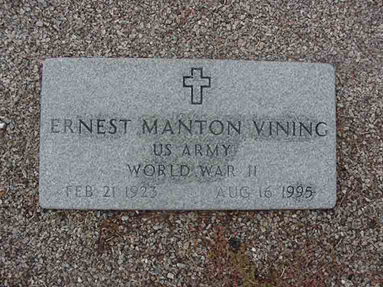

Documentation for Ernest Manton Vining - Alice Outlaw
Death Data
Gravestone for Ernest Manton Vining, in Ebenezer Pentecostal Holiness Church Cemetery, West Columbia, Lexington County, South Carolina (from Find A Grave):
